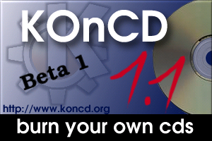
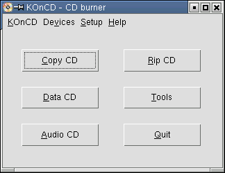
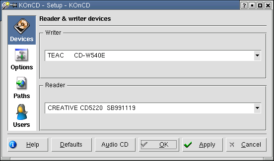
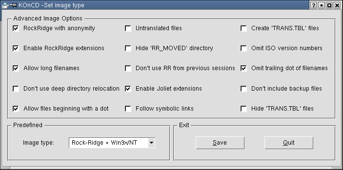
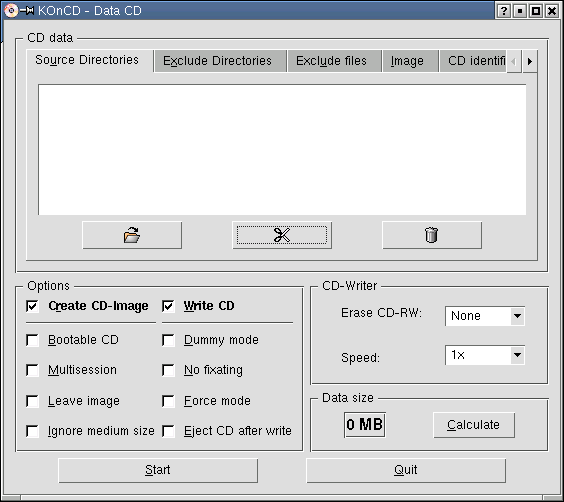
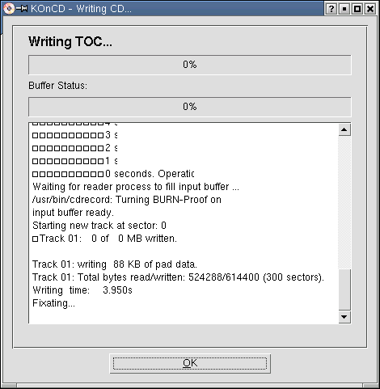

Использование KOnCD.
Александр Шепетко
Для записи CD в Linux созданы все условия. Есть замечательные
приложения для
консоли. Взять, хотя-бы, cdrecord. Поддерживается большинство
современных
стандартов CD и файловых систем, не говоря уж об аппаратуре. Причин по
которым вы захотите записывать диски под Linux может быть много. Это
стабильность, гибкость и простота - в первую очередь. А может - вы
просто поддерживаете модное ныне "движение" No Windows!
Дело личное. Неплохо будет, если вы сперва прочтете
CD-Writing HowTo чтобы
понять basic, так сказать, принципы. А здесь я хочу рассказать о
GUI-евом приложении, использующем в своей деятельности набор
программ, описываемых в HowTo. Знакомьтесь... KOnCD.

KOnCD являет собой удобную во многих отношениях GUI-программу,
поставляемую вместе с KDE. Представлено приложение довольно скромным,
самым необходимым набором функций. Поддерживает OverBurn, Burn-proof.
Работа с Audio-CD, etc. В общем, пробуйте сами. Уверен - не пожалеете.
Итак, начнем. Для начала определимся, что нам нужно для получения
желаемого результата (именно - нормальной работы KOnCD). С железом -
все понятно. Теперь о софтовой части. Перво-наперво вы должны себе
уяснить, что KOnCD - не самостоятельное приложение. Для нормальной
работы требуется наличие установленных программ. Ниже привожу список
необходимых компонентов для работы KOnCD указанием мест, где можно их
найти в случае отсутствия в вашей Linux-системе.
Linux 2.x.x
Qt 2.3.1 (http://www.trolltech.com)
KDE >= 2.2 (http://www.kde.org)
cdrecord >= 1.8x (http://www.fokus.gmd.de/research/cc/glone/employees/joerg.schilling/private/cdrecord.html)
mkisofs >= 1.12x (http://www.fokus.gmd.de/research/cc/glone/employees/joerg.schilling/private/cdrecord.html)
cdrdao >= 1.1.5
(http://cdrdao.sourceforge.net)
mpg123 >= 0.59r
(http://www.mpg123.de)
ogg123 >= 1.0rc2
(http://www.vorbis.com)
Все они должны быть корректно установлены на вашей Linux - машине. Без
них KOnCD просто не установится. Теперь устанавливаем сам KOnCD.
Варианта два - или вы имеете RPM-пакет, или *.tar.gz. В первом случае
по обыкновению исполняете:
$ su root
# rpm -ihv koncd-3.0.0-1.i386.rpm
# exit
Естественно, циферки у вас могут быть другие. Во втором же случае
распакуйте
куда-нибудь полученный tarбол:
$ tar -xzf koncd-3.0.0-1.tar.gz
И затем, перейдя в распакованный каталог:
$ cd koncd-3.0.0-1
Соберите и установите:
$ ./configure
$ make
$ su root
# make install
# exit
Для получения дополнительной информации об установке KOnCD прочтите
файл INSTALL, входящий в комплект поставки tarбола. Если все прошло
успешно - программа установлена.Теперь можете запустить ее и
полюбоваться:
$ koncd

Если вы обладатель SCSI CD-R привода, можете спокойно приступать к
исследованию возможностей KOnCD. Владельцев же IDE/ATAPI попрошу
задержаться ненадолго. Все дело в том, что cdrecord работает с железом
только стандарта SCSI. "Так что же, приехали ?!" - спросите вы. К
счастью разработчики ПО не обделили нас своим
вниманием (и меня тоже :)) . В Linux присутствует весьма интересная
вещь - "ATAPI-SCSI emulation". Приблизительно - это "эмуляция SCSI
посредством ATAPI". Выдержка из CD-Writing HowTo:
Устройства IDE/ATAPI требуют драйверов совместимости, производя
впечатление реальных SCSI устройств. С одной строны такая унифицикация
проста ("все есть SCSI"), потому что на уровне приложений Вы можете
разделять знания с другими пользователями не взирая на свойства
CD-writer-а. С другой стороны, Вы можете реконфигурировать приложения
подобные проигрывателям музыкальных CD или утилиту монтирования для
отражения изменения имени драйвера. Например, Ваш ATAPI
CD-writer доступен через фал устройства /dev/hdc, Вы можете иметь
доступ посредством /dev/scd0 после активизации драйверов SCSI
совместимости.
В общем, для того чтобы вы смогли вдоволь насладиться записью CD, ваше
ядро должно поддерживать ATAPI-SCSI emulation. Если поддержка не
включена в вашу версию ядра, вам придется пересобрать его. Советую
почитать статью Костромина В.А.
"Семь шагов к
новому ядру". Нужно подключить ATAPI-SCSI emulation как модуль во
время загрузки ядра. Причины - см. выше. После того, как обновите
версию ядра (не забудьте про reboot ;)), нужно немного
подправить ваш /etc/modules.conf (зарегистрируйтесь в системе как
root, прежде чем это делать). Туда мы добавим всего две строки:
alias char-major-21 sg
post-install sg modprobe "-k" ide-scsi
Теперь в /etc/lilo.conf добавьте append-строку для ide-scsi:
append = "hdx=ide-scsi hdy=ide-scsi"
где 'hdx' - ваш CD-R, 'hdy' - ваш CD-ROM. Например, если у вас один
HDD - это будут hdb и hdc. После этого перезагрузите Linux и
убедитесь, что IDE-SCSI модуль загружен нормально:
$ /sbin/lsmod
Module Size Used by
sr_mod 15256 0 (autoclean)
sg 28836 0 (autoclean)
ide-scsi 8224 0
scsi_mod 97560 3 [sr_mod sg ide-scsi]
de-cd 27040 0
cdrom 28544 0 [sr_mod ide-cd]
Если все в порядке, то теперь вы имеете возможность увидеть полный
список ваших "Псевдо-SCSI" :) устройств:
$ cat /proc/scsi/scsi
Attached devices:
Host: scsi0 Channel: 00 Id: 00 Lun: 00
Vendor: TEAC Model: CD-W540E Rev: 1.0C
Type: CD-ROM ANSI SCSI revision: 02
Host: scsi0 Channel: 00 Id: 01 Lun: 00
Vendor: CREATIVE Model: CD5220 SB991119 Rev: 2.03
Type: CD-ROM ANSI SCSI revision: 02
Далее нужно проверить, существуют ли файлы /dev/scd0 и /dev/scd1:
$ ls /dev/scd*
/dev/scd0 /dev/scd1
Если таковых не обнаружите (кто-то до вас их уже продал
рабовладельцам, etc.), просто сделайте следующее:
$ su root
# cd /dev
# ./MAKEDEV scd0
# ./MAKEDEV scd1
Теперь мы должны "вернуть на место" наши /dev/cdrom и /dev/cdrom1.
Дело в том,
что некоторые программы используют именно эти символические связи и
для нормальной
их работы требуется как минимум /dev/cdrom. Сначала удаляем старые:
# rm /dev/cdrom
# rm /dev/cdrom1
Теперь создаем новые ссылки, считая при этом, что '/dev/scd0' - это
наш CD-R,
а '/dev/scd1' - CD-ROM:
# ln -s /dev/scd0 /dev/cdr
# ln -s /dev/scd1 /dev/cdrom
# exit
Теперь (в то время, когда IDE-SCSI модуль загружен), если вы
попытаетесь обратиться
к CD - устройству типа:
$ mount /dev/hdb /mnt/cdr
у вас ничего не выйдет. Теперь привыкайте пользоваться новыми именами
устройств.
Почти всё сделано. Теперь осталось лишь установить необходимые права
доступа для cdrecord:
$ su root
# chown root /usr/bin/cdrecord
# chmod 4711 /usr/bin/cdrecord
# exit
Теперь я хотел бы поделиться
с вами мыслями непосредственно о работе с программой. Для начала,
естественно, нужно запустить её :). Сделать это можно двумя способами:
набрать в консоли
$ koncd &
или непосредсвенно из К-Меню. После этого вы должны увидеть примерно
следующее:
Это есть ни что иное, как главное окно KOnCD, которое поможет вам
начать работу. Рассмотрим основные возможности на примере создания
обычного data-диска (остальное оставим на самостоятельное изучение,
тем более, что программа уже давно переведена русский язык).
Первое что нужно сделать - это настроить программу. Для этого
необходимо запустить ее в привилегиями root. После чего в меню
главного окна выбрать "Setup/KOnCD..." или использовать клавиатурное
сокращение "Ctrl+S". В результате полуим окошко следующего вида:

Здесь видим четыре раздела. По порядку. Раздел Devices используется
для указания устройств записи и чтения носителей. В разделе Options
можно задать размер FIFO буфера пишушего привода, включить/отключить
использование BURN-Proof, а также включить/отключить Splash-картинку,
показываемую при старте KOnCD. В разделе Paths должны быть корректно
указаны абсолютные пути к программам cdrecord, readcd, cdrdao,
mkisofs. А раздел Users порзволяет указать пользователей "non root"
режима работы программы. После успешной настройки завершите работу с
программой и запустите как обычный пользователь. Итак, можем
приступать.
Для начала, давайте определимся, какой тип будет иметь образ будущего
CD-ROM. Обратимся к CD-Writing HowTo:
Большинство явных различий файловой системы ISO9660, по сравнению
с Extended-2 файловой системой, - вы не можете модифицировать
файлы,после записи на носитель. Ограничения файловой системы ISO9660
следующие:
-
допускается только 8 уровней подкаталогов (считая от каталога верхнего
уровня CD) (используется RockRidge расширение для увеличения этого
числа)
-
максимальная длина имени файла: 32 символа
-
емкость 650 MB
RockRidge - расширение, позволяющее более длинные имена файлов
и более глубокую иерархию каталогов для ISO-9660 файловой системы. При
чтении CD-ROM с RockRidge расширением под Linux, все известные
свойства файлов собственник, группа, разрешения, символические
ссылки (воспринимаются ка UNIX-подобная файловая система). Эти
расширения не доступны при чтении CD-ROM под DOS или операционными
системами семейства Windows.
El Torito может использоваться, для создания загрузочных CD. В
этом случае BIOS вашего PC тоже должен поддерживать эту функцию.
Грубо говоря, первые 1.44 (или 2.88 если поддерживается) Мб CD-ROMа
содержат образ вашей дискеты. Этот образ обрабатывается BIOS как
дискета, при загрузке с него. (При загрузке с этого виртуального
дисковода, ваше оригинальное устройство A: (/dev/fd0) может быть не
доступно).
HFS позволяет читать macintosh CD-ROM, как будто это HFS том
(родная файловая система MacOs)
Joliet добавляет длинные имена файлов (среди прочих вещей) для
новых вариантов Windows (95, 98, NT). Однако, автор не знает
инструментов для работы с длинными именами под чистым DOS или Windows
3.11
Для установки типа образа мы должны воспользоваться окошком "Image
type". Находясь в главном окне, нажимаем "Ctrl+I" и получаем его в
наше распоряжение.

Здесь имеем возможность выбрать как предустановленные варианты
настройки, так и более тонко настроить тип образа. Я же просто выбираю
"Rock-Ridge + Win9x/NT" и жму кнопку "Save". Готово. Теперь можем
приступать к непосредственному созданию образа и записи его на диск.
В главном окне нажимаем кнопку "Data CD". Видим окошко.

Собственно, здесь и начинается самое интересное. Для начала давайте
установим требуемые опции. По порядку:
-
Create CD-Image - указываем программе, создавать образ CD или
нет. Если отключить эту опцию, то мы лишаемся возможности создать
загрузочный CD, а также указывать исходные файлы для записи.
Используйте эту опцию только в случае наличия существующего образа.
-
Bootable CD - позволяет создать загрузочный диск.
-
Multisession - позволяет создать мультисессийный диск.
-
Leave image - если установить, то образ диска после записи не
будет удален. Используйте, если хотите сделать несколько копий этого
образа позже.
-
Ignore medium size - игнорировать емкость носителя. Может
помочь в том случае, если объем ваших данный чуточку превышает емкость
носителя. Так называемая функция перепрожига "overburn". Здесь
программа просто игнорирует данные полученные с носителя о его
емкости и будет пытаться записать любой обьем данных. Используйте с
осторожностью, так как некоторые источники говорят о наличии случаев
повреждения приводов (!).
-
Write CD - наличие этой галочки подтверждает непосредственную
запись данных на диск. В противном случае физически на носитель НИЧЕГО
записано НЕ БУДЕТ. Может быть полезно, если вы хотите получить только
образ CD, а записать его попозже.
-
Dummy mode - на самом деле физически ничего не записывается.
Полезно в отладочных целях.
-
Force mode - режим игнорирования ошибок. На крайний случай.
-
Eject CD after write - извлечь носитель из привода после
записи.
-
Erase CD-RW - позволяет установить режим очистки CD-RW
носителя.
-
Speed - установите необходимую скорость записи на диск.
-
Кнопка Calculate - позволяет подсчитать общий обьем файлов
подготовленных для записи.
Теперь укажем список исходных файлов для записи, используя вкладки
"Source Directories", "Exclude Directories" и "Exclude Files", а также
три кнопки под списком каталогов. Во вкладке "Image" задаем абсолютный
путь файла образа, boot-образ (если указана опция "Bootable CD") и тип
образа. Также можем установить опцию "Burn 'on-the-fly'", если не
хотим создавать файл образа, а сразу писать на носитель. Содержимое
вкладки "CD identification" позволяет задать четыре параметра
касательно копирайтов и т. д. Вкладку "Multisession" используйте, если
продолжаете запись мультисессийного диска.
Когда все готово, жмем кнопку "Start" и наблюдаем за процессом записи.

По окончанию KOnCD известит вас об этом. Вот, собственно и все.
Просто, понятно, доступно :) Как знать, может вы больше пристраститесь
к консольным программам. Дело ваше. Главное - результат. Хотя...
иногда в любом деле наступает иной момент. Взять хотя бы Linux ;)
Удачи!
|